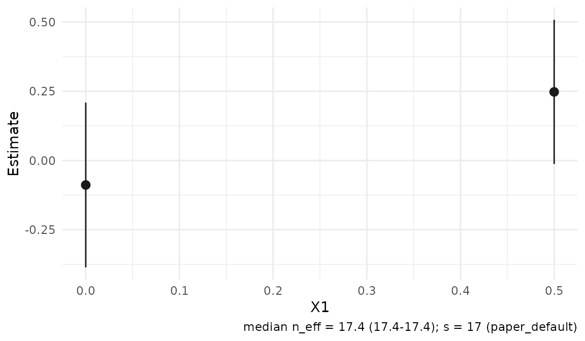
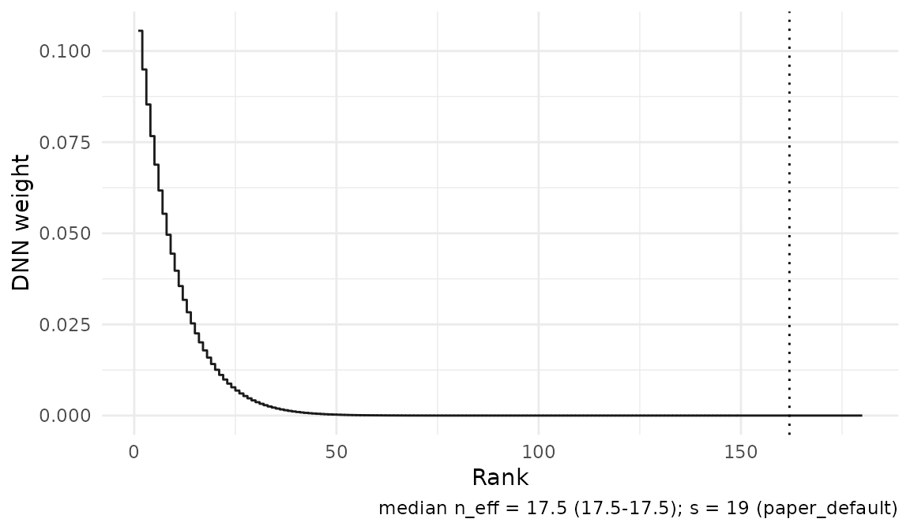

This walkthrough fits conditional average treatment effects (CATE)
and conditional means at selected covariate profiles. Install the
package using the README.
Use browseVignettes("RdistNN") to open the installed guide
collection. The paper
gives the statistical assumptions and results; this guide covers the
calls and how to read their outputs.
Use x0 for one profile or X0 for a matrix
with one profile per row. Covariates and supplied predictions must be
finite, complete and aligned in the same observation order. Data-frame
targets follow the x_cols order.
Conditional average treatment effects
For binary treatment D, the AIPW inputs are outcome
Y, control and treated conditional means m0
and m1, and propensity e. Nuisance fitting is
external to the package. This simulation supplies oracle
nuisances so that the example demonstrates localization without
choosing a nuisance learner.
demo_cate <- cate_demo_data(n = 180, p = 2, design = "hetero", seed = 1)
df <- demo_cate$data
fit_cate <- cate_dnn(
data = df, x_cols = c("X1", "X2"), y_col = "Y", t_col = "D",
m0_col = "m0_oracle", m1_col = "m1_oracle", e_col = "e_oracle",
x0 = c(0, 0), k = 1L, se = TRUE,
return = c("W", "dx")
)
summary(fit_cate)
#> <summary.cate_result>
#> signal: aipw
#> localization: s = 19, s/n = 0.106
#> targets: 1
#> estimate std.error statistic p.value conf.low conf.high
#> target_1 0.4527 0.2607 1.737 0.08242 -0.05817 0.9636
confint(fit_cate)
#> conf.low conf.high
#> target_1 -0.05817257 0.9636003
predict(fit_cate, x0 = c(0.2, -0.1), interval = "confidence")
#> fit lwr upr
#> [1,] 0.7890503 0.4451826 1.132918fit_cate$tau contains the estimates and
fit_cate$se contains their jackknife standard errors.
nobs(fit_cate) counts training observations; local
effective sample size describes weight concentration.
confint() returns pointwise normal intervals, not
simultaneous confidence bands.
If you already have an observation-level pseudo-outcome, pass it directly. Here we use the aligned oracle AIPW column from the same demo data:
X <- as.matrix(df[c("X1", "X2")])
fit_cate_matrix <- cate_dnn(
X = X, x0 = c(0, 0), pseudo_outcome = df$aipw_oracle, k = 1L
)
c(data_frame = fit_cate$tau, matrix = fit_cate_matrix$tau)
#> data_frame matrix
#> 0.4527139 0.4527139The data-frame pathway also accepts pseudo_outcome. See
?cate_dnn for the complete input contract. Preserve the
same observation order for every nuisance or pseudo-outcome vector.
Migrating earlier CATE inputs
The normalized Robinson construction has been removed. Replace
earlier m_col calls with propensity and both arm-specific
outcome means for AIPW, or supply an externally justified signal through
pseudo_outcome. A pooled outcome mean is not a substitute
for the two arm means. Demo data now include m1_oracle and
aipw_oracle; the former rho_oracle used a
different signal, so this is not a numerically equivalent column
rename.
Fresh nuisance-based fitting constructs
mu1 - mu0 + D*(Y-mu1)/e - (1-D)*(Y-mu0)/(1-e), with
validated and clipped propensities. The retired m_col
argument remains rejected. A directly supplied
pseudo_outcome takes precedence over accompanying nuisance
selectors and is localized unchanged; its construction, causal
interpretation and inferential justification remain the caller’s
responsibility. The paper’s residualized-slope estimating equation is
distinct from the removed normalized pseudo-outcome.
Each new fit records meta$signal_source:
"aipw" means the package constructed the signal through its
nuisance-input branch, and "supplied" means the caller
provided it. A supplied vector remains "supplied" even when
it equals AIPW or comes from a column named aipw_oracle.
meta$created_with_version records the version of the
package actually loaded when the original fit was created. Candidate
views and summaries preserve that version. Neither field certifies
identification, same-sample nuisance accuracy or stability, localization
bias, or the conditions for pointwise inference.
Refit objects created by older development versions. Both packages
reuse current fitted state for prediction, covariance, candidates and
diagnostics; they do not reconstruct retired object schemas or score
methods. Prediction returns ordinary numeric vectors, matrices or
list(fit, se.fit). See the companion’s saved-fit
guide.
Covariance between prespecified profiles
profiles <- rbind(c(0, 0), c(0.2, -0.1))
joint <- cate_dnn(X = X, X0 = profiles, pseudo_outcome = df$aipw_oracle,
s = fit_cate$meta$s, return = character())
V <- vcov(joint)
a <- c(1, -1)
c(contrast = sum(a * coef(joint)),
contrast_se = sqrt(drop(crossprod(a, V %*% a))))
#> contrast contrast_se
#> -0.3363364 0.1739546Both covariance axes follow coef(joint). Common deleted
observations retain dependence between profiles. Valid contrast
inference requires the relevant joint assumptions; pointwise intervals
alone do not establish it.
The documented sampling framework uses independent observations and
supplies neither cluster nor survey-design inference. Exact distance
ties use the original covariates lexicographically in their supplied
column order. Identical localization covariate rows receive their
block’s average weight, with the same rule applied to every deletion’s
remaining block. Outcomes, treatments and nuisance values do not define
the groups. Aligned row permutations then preserve estimates and
covariance up to numerical precision. A warning identifies this
practical modification, which is not covered by the paper’s theory.
Individual weights, support and ESS can change. The reported
s/n is descriptive; it is not a calibrated inference
threshold.
Check local support
Supplied propensities must lie in [0, 1]; AIPW uses
clipped values with clip = 1e-8 by default. Clipping
prevents undefined denominators but cannot create local treatment
support. Supplied pseudo-outcomes are used unchanged.
Inspect local weight concentration and treated/control mass:
d_cate <- as.data.frame(diagnostics(fit_cate))
d_cate[, c("target_id", "n_eff", "treated_mass", "control_mass")]
#> target_id n_eff treated_mass control_mass
#> target_1 target_1 17.52493 0.7317029 0.2682971Diagnostics describe the realized sample near a target; they are not
a test of the paper’s assumptions. Keep "W" in
return for weight diagnostics, "dx" for
metric-distance summaries. Overlap remains available from the supplied
treatment/propensity inputs without requesting a "nuisance"
extra.
Nonparametric regression
np_dnn() estimates a conditional mean. Regression fits
support the same summary(), coef(),
confint(), vcov(), nobs() and
predict() calls as CATE; their direct estimate and
standard-error fields are mu and se.
demo_np <- np_demo_data(n = 160, p = 2, design = "sinusoidal", seed = 2)
fit_np <- np_dnn(
data = demo_np$data, x_cols = c("X1", "X2"), y_col = "Y",
X0 = rbind(c(0, 0), c(0.5, 0)), k = 1L, se = TRUE,
return = c("W", "dx", "ess")
)
summary(fit_np)$coefficients
#> estimate std.error statistic p.value conf.low conf.high
#> target_1 -0.08841632 0.1517981 -0.5824601 0.56025679 -0.38593504 0.2091024
#> target_2 0.24768566 0.1328475 1.8644359 0.06226051 -0.01269067 0.5080620
confint(fit_np)
#> conf.low conf.high
#> target_1 -0.38593504 0.2091024
#> target_2 -0.01269067 0.5080620
predict(fit_np, x0 = c(0.2, -0.1), interval = "confidence")
#> fit lwr upr
#> [1,] 0.06621915 -0.250889 0.3833273Use uppercase Y for the matrix interface:
fit_np_matrix <- np_dnn(
X = as.matrix(demo_np$data[c("X1", "X2")]),
Y = demo_np$data$Y, x0 = c(0, 0), k = 1L
)
fit_np_matrix$mu
#> [1] -0.08841632predict() evaluates new profiles using the retained
training outcomes and geometry. Two-scale regression uses
np_tdnn() with orders s1 < s2 and
s2 < n for jackknife uncertainty. See
?np_tdnn for its signed weights and additional
requirements.
Choosing localization and uncertainty settings
The defaults use exact DNN weights and k = 1. Unless
s or tuning is supplied, the subsample order
is s = floor(0.4 * n^((p + 1)/(p + 2))), where
p is the covariate dimension. Larger s
concentrates more weight near the target. The written manuscript
derivations use k = 1; larger fixed k is
supported in the implementation.
The order s is not a count of observations retained in a
nearest-neighbor truncation. The unaveraged exact rank table has support
through rank n - s + k (n - s + 1 for
k = 1). Block averaging can extend nonzero observation
weights to the end of an identical-covariate block crossing that edge.
The optional neighbors extra reports the first
k neighbors, rather than the full weight support.
For sensitivity analysis, compare the paper’s candidate orders without changing the primary result:
fit_grid <- np_dnn(
data = demo_np$data, x_cols = c("X1", "X2"), y_col = "Y",
x0 = c(0, 0), tuning_mode = "grid", se = FALSE
)
fit_grid$tuning_grid$candidates
#> candidate_id computed_key is_default feasible reason status lambda s
#> 1 lambda_0p3 s_13 FALSE TRUE ok ok 0.30 13
#> 2 lambda_0p4 s_17 TRUE TRUE ok ok 0.40 17
#> 3 lambda_0p5 s_22 FALSE TRUE ok ok 0.50 22
#> 4 lambda_0p75 s_33 FALSE TRUE ok ok 0.75 33
candidate_fit(fit_grid, 1L)$mu
#> [1] -0.0286826tuning_dnn_paper() uses lambda = 0.4 and
the grid c(0.3, 0.4, 0.5, 0.75); s is
recomputed for each candidate. Grid mode is a sensitivity comparison,
not an automatic optimization rule. It cannot be combined with explicit
s.
For uncertainty, jackknife = "fast" reuses full-sample
ranks; jackknife = "loo" directly recomputes leave-one-out
weights. Delete-1 inference requires s < n. Set
se = FALSE to omit standard errors.
Seeds and native threads
The demo helpers’ explicit seed arguments restore the
caller’s saved RNG state. seed = NULL draws from the
current stream. Simulation grids use master_seed to
generate their replicate seeds. To reproduce a grid, also retain the RNG
kind, dependency versions and availability, future plan and tuning
configuration; equal integer seeds alone do not guarantee agreement
between the future.apply route and its fallback. See
?sim_cate_run for the reproducibility contract shared with
sim_iv_run().
Native routines default to at most two OpenMP threads. Set
options(RdistNN.num_threads = 4L) to request four, or
1L for one native thread. Lower OpenMP runtime limits still
apply. See ?RdistNN for the controls and saved-RNG-state
limitations.
Plots and reusable weights
Plotting is optional and requires ggplot2. Dashboards additionally require patchwork. Both fitted workflows support the estimate and weight views:
plot(fit_np)
plot_weights(fit_cate, type = "profile")
For your own scalar signal, build weights directly. Rows of
W index observations and columns index target points:
Further reading
- Conditional LATE: a complete binary-IV example.
- Notation and conventions: input shapes, result fields and uncertainty scales.
- Diagnostics and reporting and visualisation: support, plots and saved outputs.
- DNN weights and tuning: localization controls and candidate comparisons.
- Paper replication: study-specific code and accepted manuscript evidence.
Experimental PLQR and local IV-GMM have separate reference articles.